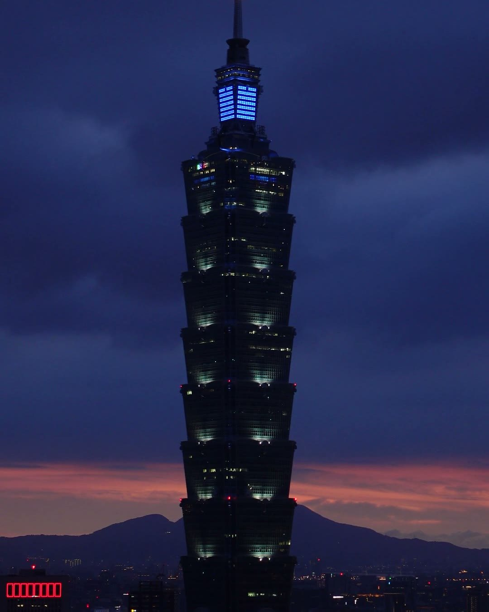
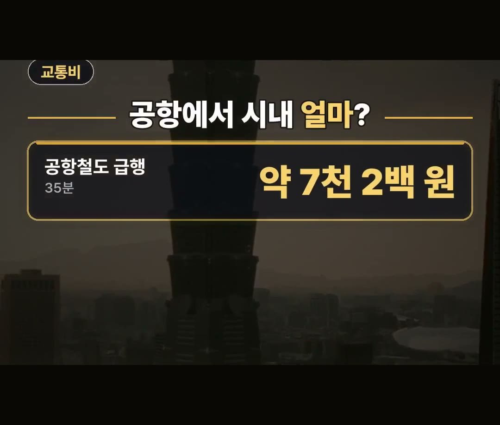
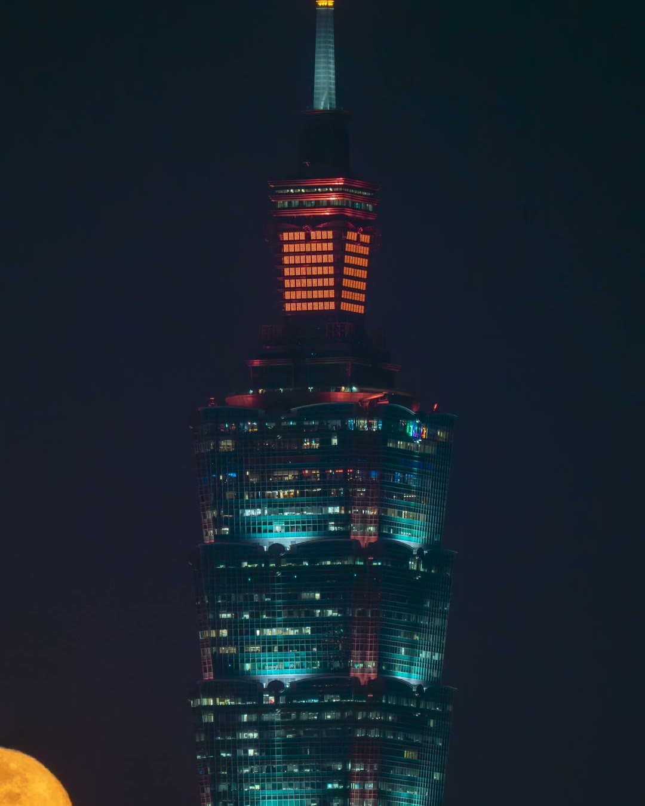
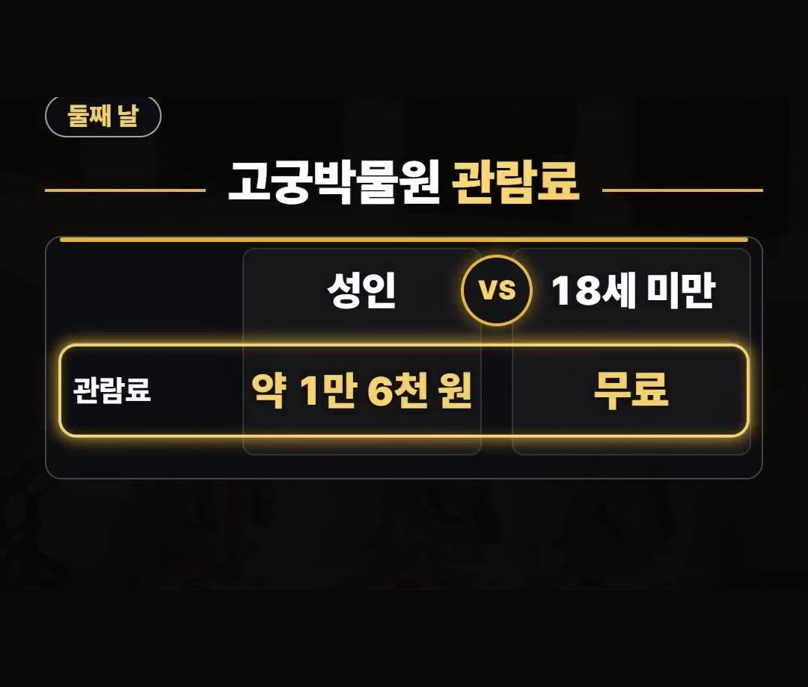
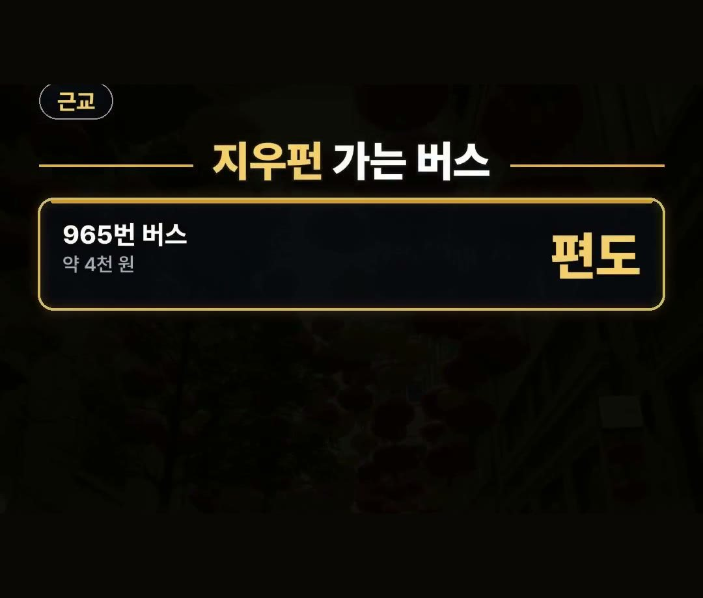
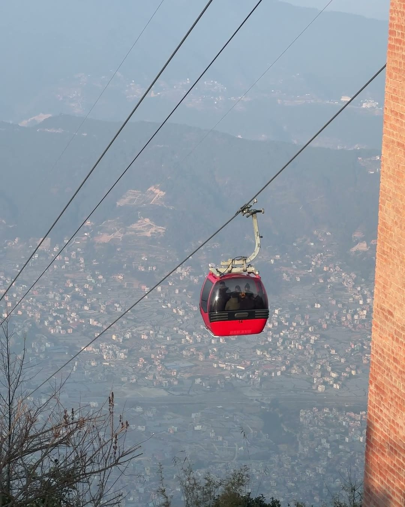
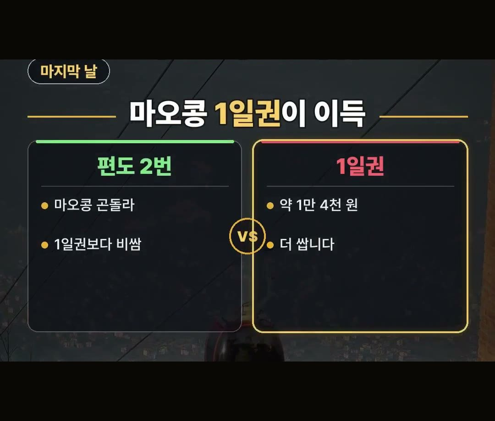

타이베이 여행 일정, 동선 순서대로 입장료·교통비 정리 (2026년 11월 기준)
※ 이 글에는 제휴 링크가 포함되어 있으며, 링크를 통해 예약·구매하시면 일정 수수료를 받을 수 있습니다. (가격은 같습니다)
※ 이 포스팅은 쿠팡 파트너스 활동의 일환으로, 이에 따른 일정액의 수수료를 제공받습니다.
타이베이 여행 일정을 짜는데 첫날부터 어디로 가야 하는지, 입장료와 교통비는 얼마나 잡아야 하는지 고민되시죠?
이 글에서는 공항철도 35분부터 마오콩 곤돌라까지 동선 순서대로 비용을 원화로 정리했어요.
2026년 11월 기준 금액이고, 18세 미만 무료나 곤돌라 1일권처럼 조건에 따라 달라지는 부분도 함께 짚었습니다.
돈 아끼는 연구소 아낌 소장이에요.
2026년 11월 기준으로 고궁박물원은 성인 약 1만 6천 원이지만 18세 미만은 무료이고, 마오콩 곤돌라는 편도 2번보다 1일권(약 1만 4천 원)이 쌉니다.
이 두 가지를 기억하세요! 😊
타이베이 여행 일정, 날짜별 큰 흐름
먼저 사흘 동선을 한 번에 훑어볼게요.
아래 금액은 모두 2026년 11월 기준이고, 원화로 바꾼 대략의 값입니다.
- 첫날: 공항철도 → 중정기념당(무료) → 타이베이 101
- 둘째 날: 국립고궁박물원 → 965번 버스로 지우펀
- 마지막 날: 마오콩 곤돌라
이 순서대로 움직이면 입장료가 없는 곳을 첫날에 두고, 비용이 드는 곳은 뒤로 나누어 배치하게 됩니다.

첫날: 공항에서 시내로, 그리고 무료 중정기념당
도착하자마자 가장 먼저 정할 것은 공항에서 시내로 가는 방법이에요.
공항철도 급행은 타이베이역까지 35분이 걸립니다.
- 공항철도 급행: 타이베이역까지 35분
- 편도 요금: 약 7천 2백 원

시내에 들어오면 첫 일정은 중정기념당이에요.
입장료가 없는 곳이어서 여행 첫날 부담 없이 들르기 좋습니다.
다만 오후 6시까지 열기 때문에, 이 시간에 맞춰 도착하도록 첫날 일정을 잡아 두시면 됩니다.
첫날 저녁: 타이베이 101 89층
중정기념당을 둘러본 뒤 저녁에는 타이베이 101로 이동하는 동선이에요.
89층 전망대 입장료는 성인 기준 약 2만 7천 원입니다.
이번 일정에서 입장료가 가장 눈에 띄는 곳이라, 예산을 짤 때 이 금액을 먼저 넣어 두면 계산하기 편해요.

숙소와 투어는 날짜에 맞춰 미리 보시면 일정을 짜기 수월합니다.
둘째 날: 고궁박물원과 지우펀
둘째 날은 국립고궁박물원으로 시작해요.
관람료는 성인 약 1만 6천 원이고, 18세 미만은 무료입니다.
가족 여행이라면 동행하는 분의 나이를 미리 확인해 두세요.
같은 곳을 가도 내는 돈이 달라질 수 있습니다.
- 성인: 약 1만 6천 원
- 18세 미만: 무료

오후에는 965번 버스를 타고 지우펀으로 가요.
편도 요금은 약 4천 원입니다.
왕복으로 다녀오면 교통비로 약 8천 원을 잡아 두시면 되겠죠.
- 965번 버스: 편도 약 4천 원

마지막 날: 마오콩 곤돌라는 1일권 비교부터
마지막 날 마오콩 곤돌라를 탈 계획이라면 표를 사기 전에 비교해 볼 게 있어요.
편도로 두 번 타는 것보다 1일권이 쌉니다.
1일권은 약 1만 4천 원이에요.
- 편도 2번: 1일권보다 비쌈
- 1일권: 약 1만 4천 원, 더 쌉니다
올라갔다가 내려올 계획이라면 처음부터 1일권 가격을 기준으로 생각해 두는 편이 좋아요.


정리
- 첫날은 공항철도 급행(타이베이역까지 35분, 편도 약 7천 2백 원) → 무료인 중정기념당(오후 6시까지) → 타이베이 101 89층(성인 약 2만 7천 원) 순서예요.
- 둘째 날 고궁박물원은 성인 약 1만 6천 원, 18세 미만은 무료이고, 지우펀행 965번 버스는 편도 약 4천 원입니다.
- 마오콩 곤돌라는 편도 2번보다 1일권(약 1만 4천 원)이 쌉니다. 모든 금액은 2026년 11월 기준이에요.
예약 링크는 아래에 모아 두었어요.
지금 쓸 수 있는 여행사 할인
- 📶 해외 데이터는 이심으로 미리 · 마이리얼트립 마이심 「대만 50% 250원~」 · 2개 이상 추가 할인 (마이심 화면 표시 기준 · 11/27 확인 · 값은 바뀔 수 있음)
- 🎟 클룩 대만 어트랙션 5% 할인 코드 「YEARENDTWATT5」 (지정 상품 한정 · 일부 상품 제외 · 쿠폰 취소 시 재발행 불가 · 예산 소진 시 조기 종료 · 12월 31일까지)
※ 여행사 사정으로 조건이 바뀌거나 일찍 끝날 수 있어요. 예약 전에 여행사 화면에서 한 번 더 확인하세요. (2026-11-27 확인)
TAIPEI타이베이FREE📘 무료 타이베이 가이드 전자책공항·교통 · 돈 아끼는 법 · 맛집 · 근교 · 벌금·주의 · 귀국 날무료로 보기 ›📌 2026년 11월 기준 정보예요. 가격은 환율·시기에 따라 달라질 수 있어요.
영상 화면: Pexels (David Lomax, Jea Tang, Khan ishaan, LayG Traveller, Nishant Subedi, Timo Volz)
사진: Pixabay (MagicTV)